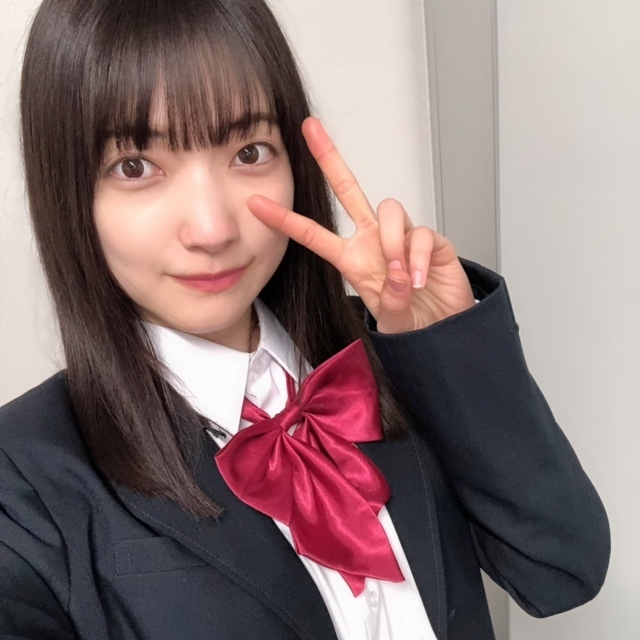
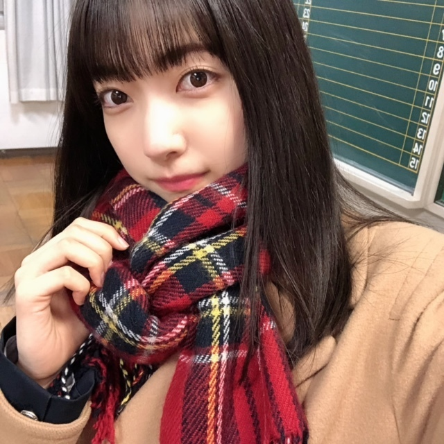
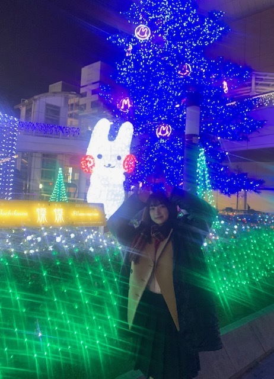

ああ〜〜
なんだかスカッとしたい〜〜〜
そんな気分の方、是非！
12月7日 今夜 20:00〜「スカッとジャパン」さん
胸キュンスカッとに出演させていただきます

制服を着て、校舎を歩いて、
母校じゃないのに懐かしい匂いがして、、
一瞬だけ高校生に戻りたくなった
もう戻ることはないと分かっていながら、
ああ戻りたいなって思えて、、
でも、もう一度自分の学生時代をやり直し切る自信はないので
こうして少しの間だけ、
高校生になれて十分かなあと
切ないような、眩しいような、、
そんな気持ちなった
戻りたいような戻りたくないような
そんな時間、あります？
戻りたいのは
その時間が大切な思い出である証拠だし、
戻りたくないなは
「今」が自分にとって大切である証拠だと思う
心は何かにぎゅーーっとされているけれど、
そうされながらもきらきらし続けているような気持ち〜〜

「スカッとジャパン」さんは家族で見ていた番組で、
中でも「胸キュンスカッと」は大好きなコーナーなので出演することができてとても嬉しかったです
演技の経験が全くなく今回が初めての挑戦になりました
撮影前の本読みや、香盤の見方など知ることができましたし、撮影ってこういう風に進んでいくんだなあ学ぶことができました
緊張しましたが、
監督さんが分かりやすいアドバイスをくださって、
楽しいな、もっともっとやってみたいなと感じました
ありがとうございました！
私は感受性が豊かすぎるので、感情移入したり
すぐ涙が出たりして自分で自分に大変だなと思うこともありますが、
「演技」として表現するためにこの感受性を大事にしたいですし、これから感じる感情ひとつひとつをしっかり覚えておこうと思います
今回、役の由梨絵ちゃんで居れたのは1日だったので
もっと長い期間役で居たり、時間をかけて感情をつくっていくことに挑戦してみたいなと思っています
見ていただけたら嬉しいです！
といいつつ、、

自分はどんな気持ちで見ればいいんでしょう☆
ぴょん🐰
🧀🧀🧀🌸
大園玲